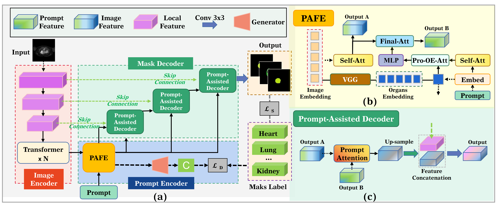
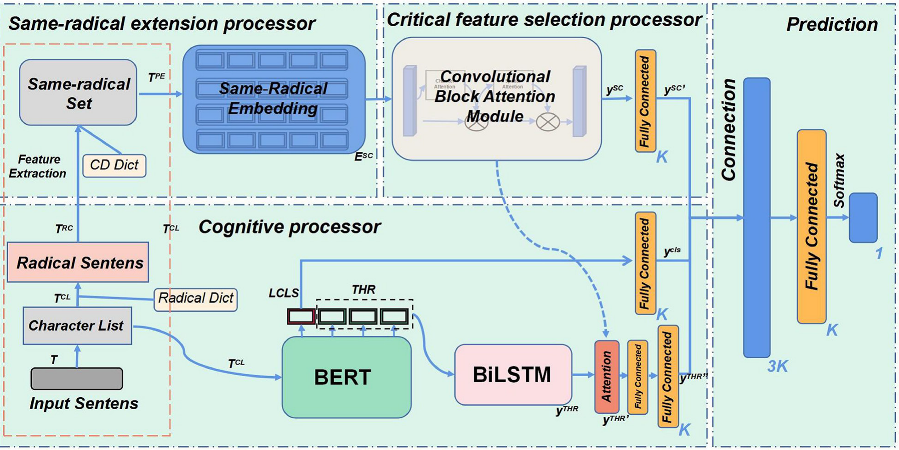
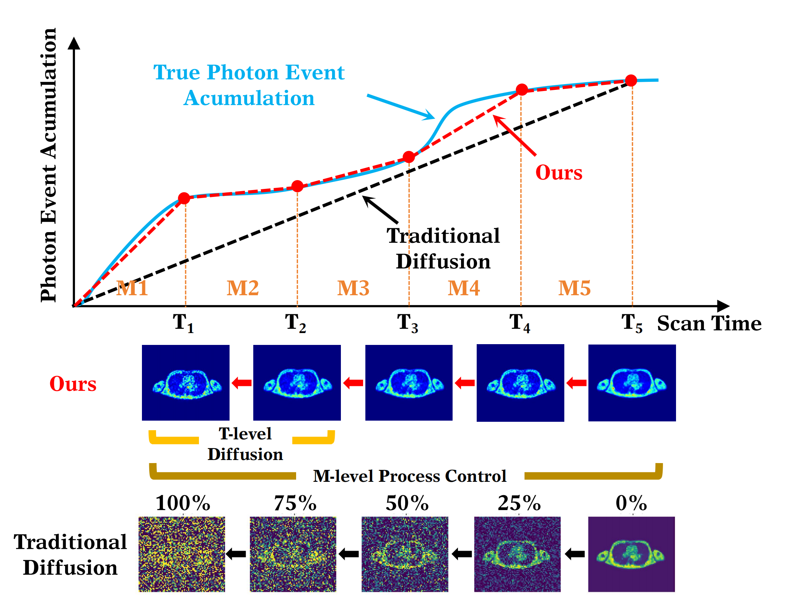
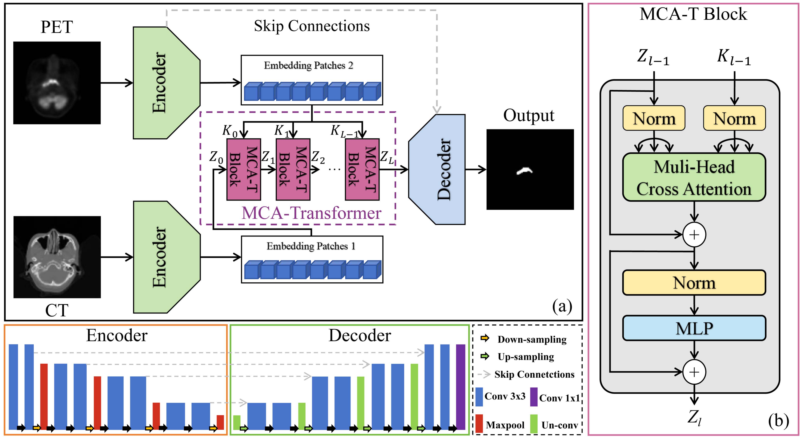
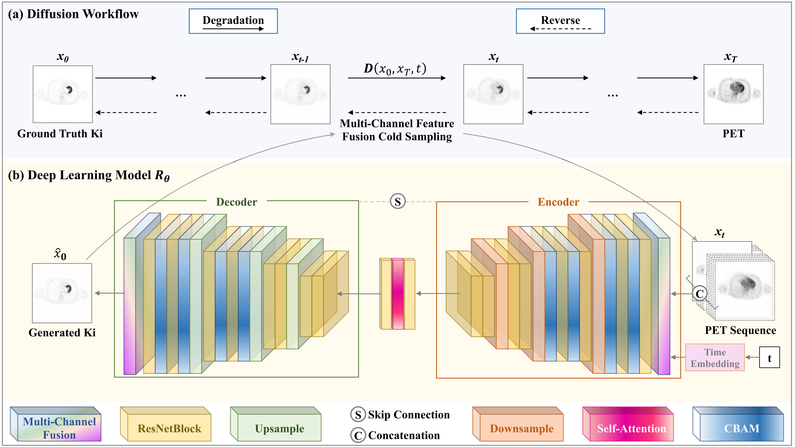
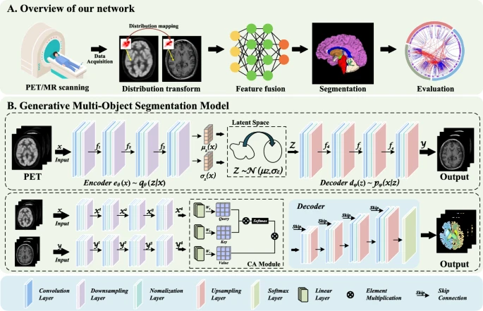
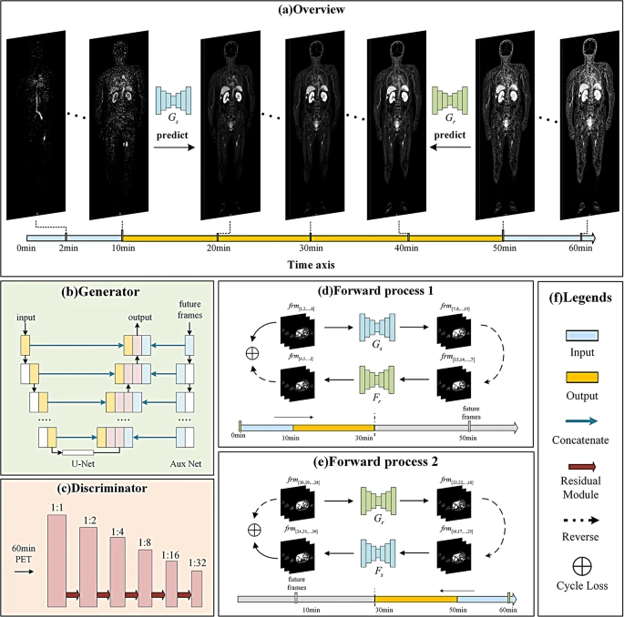

关于我
我本科毕业于南方医科大学，硕士毕业于深圳大学人工智能专业，现为中科院深圳先进技术研究院博士研究生。研究方向涵盖医学图像处理、视觉语言模型、异常检测、图像重建等，在医学人工智能领域具有多项科研成果。
教育背景
- 2025–至今：博士在读，中国科学院深圳先进技术研究院，生物医学工程专业
- 2022–2025：硕士，深圳大学，人工智能专业
- 2018–2022：本科，南方医科大学，生物医学工程专业
科研方向
- 医学图像异常检测与分割
- 视觉语言模型在空间智能中的应用
- 扩散模型与医学图像重建
- 图像组学与临床融合预测模型
代表成果 Publications
- Y. Gao, Z. Huang, Y. Wu, W. Li, et al., "Dual-Prompt-Enhanced Multiorgan Segmentation Model for Total-Body PET Images," IEEE TRPMS, 2025. (IF: 4.1)
- Y. Gao, X. Peng, "Same-Radical Character Association Model in Text Classification," IEEE TCE, vol. 70, no. 1, pp. 1000–1009, 2023. (IF: 10.9)
- Y. Gao, Z. Huang, X. Xie, W. Zhao, et al., "Multistage Diffusion Model With Phase Error Correction for Fast PET Imaging," IEEE JBHI, 2025. (IF: 6.8, TOP)
- W. Zhao, Z. Huang, S. Tang, W. Li, Y. Gao, et al., "MMCA-Net: A Multimodal Cross Attention Transformer Network for Nasopharyngeal Carcinoma Tumor Segmentation," IEEE JBHI, vol. 28, no. 9, pp. 5447–5458, 2024. (IF: 6.8, TOP)
- M. Wen, Y. Wu, Z. Huang, X. He, Y. Gao, et al., "Diffusion-Based Model for Parametric Ki Generation From Total-Body Dynamic PET of Short-Duration Scan," IEEE TRPMS, 2025. (IF: 4.1)
- W. Li, Z. Huang, H. Tang, Y. Wu, Y. Gao, et al., "A Generative Whole-Brain Segmentation Model for Positron Emission Tomography Images," EJNMMI Physics, vol. 12, no. 1, p. 15, 2025. (IF: 3.2)
- Q. Yang, W. Li, Z. Huang, Z. Chen, W. Zhao, Y. Gao, et al., "Bidirectional Dynamic Frame Prediction Network for Total-body [68Ga]Ga-PSMA-11 and [68Ga]Ga-FAPI-04 PET images," EJNMMI Physics, vol. 11, no. 1, p. 92, 2025. (IF: 3.2)
技能特长
- 编程语言：Python, C
- 深度学习：PyTorch, MONAI
- 图像分析工具：SimpleITK, PyRadiomics, ITK-SNAP
- 统计建模：Sklearn, XGBoost, LASSO